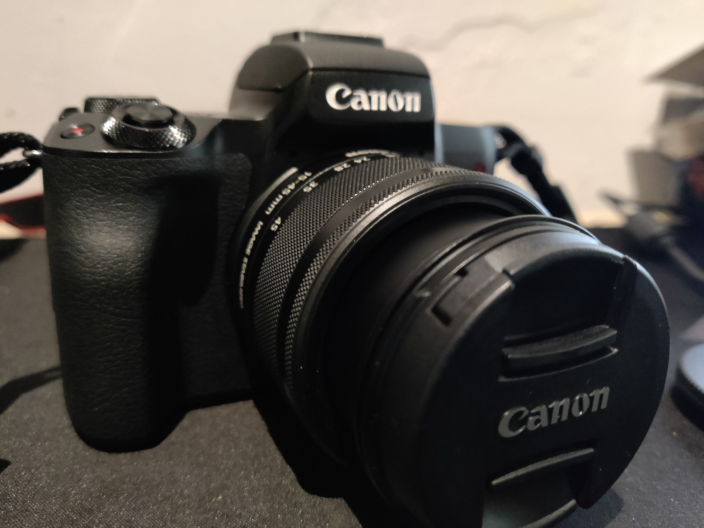

Capturing the Essence of Nature
Explore the beauty of wildlife through your lens and learn how to capture those breathtaking moments in the wild.
 Read More
Read More
Mastering Landscape Photography
Discover the art of landscape photography and learn techniques to capture the stunning beauty of natural landscapes.
Read MoreThe Play of Light and Shadows
Learn the secrets of using light and shadows to create dramatic and visually striking photographs.
 Read More
Read More
Demystifying Camera Settings: A Guide to ISO
Unlock the potential of your camera by understanding ISO settings. Learn tips and tricks for achieving the perfect exposure.
 Read More